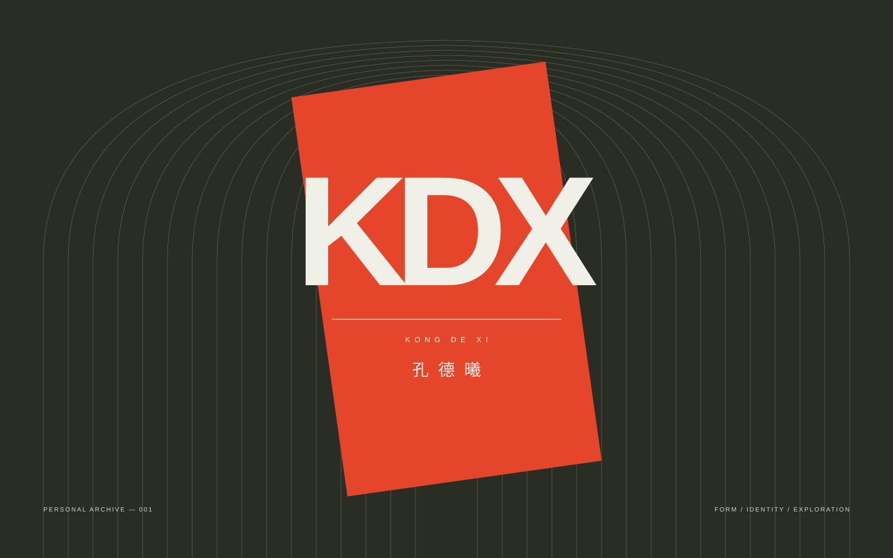
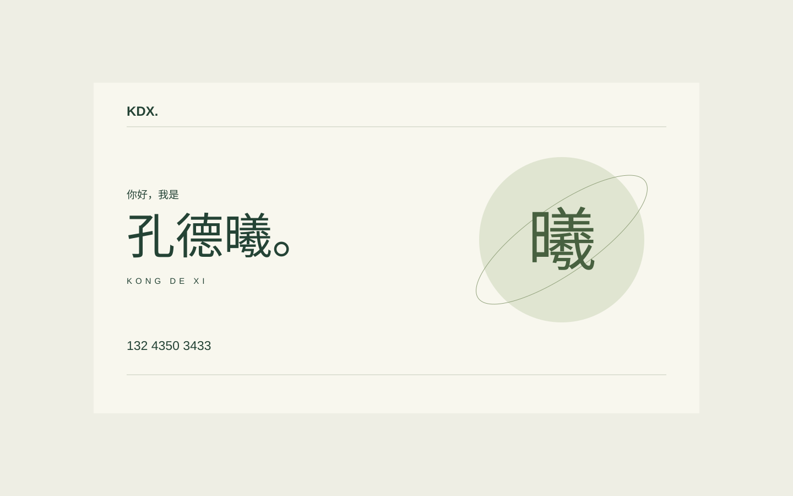

KONGDE XI.
孔德曦
01 / A LITTLE ABOUT ME从一句你好开始
世界很大。
在这里，
认识一下。
THE PERSONAL INDEX
一块属于自己的空间。
NO. 001 / KDX
A PLACE TO BE YOURSELF.个人空间 / 孔德曦 © 202601 — PERSONAL IDENTITY
一个名字，一个入口。
慢慢成为它本来的样子。
02 / THE EXPLORATION LOG这个网站走过的几个版本
探索记录（03）
从一张名片，到一个可以逛的小世界。
把每一次尝试，都留在这里。
01个人空间PERSONAL INDEX当前版本 / 排版与动效↗
02开车兜风THE PLAYGROUND历史版本 / 小车互动↗ 03一句你好THE FIRST HELLO初始版本 / 个人名片↗
03一句你好THE FIRST HELLO初始版本 / 个人名片↗
03一句你好THE FIRST HELLO初始版本 / 个人名片↗
NOT A FINISHED STORY.TO BE CONTINUED ↘
永远为新的可能，留一点空白。
03 / START A CONVERSATION下一段对话，从这里开始